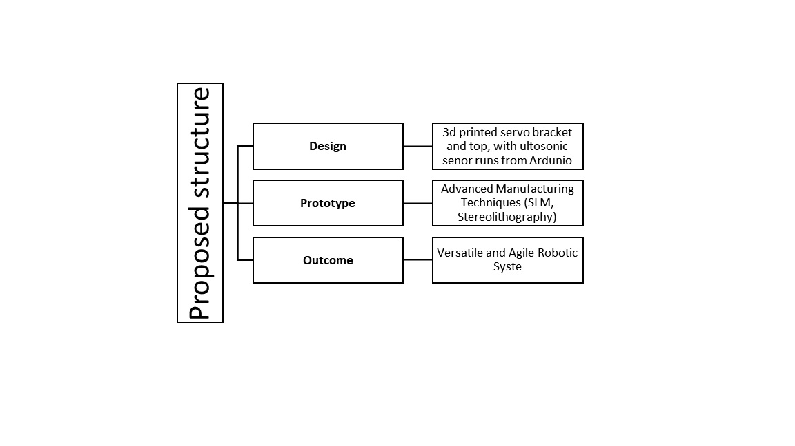

Aenean ornare velit lacus, ac varius enim lorem ullamcorper dolore aliquam.

The the approach taken for making the four legged Robot was we have to make the 2D image in CAD so that we can have a rough figure in what to do in the blender total of 12 server motors were used and it was powered by a battery. The main goal for the project is two make the spider like robot to go to different terrains and be able to move freely and collect the data for survailance. The exoskeleton of the robot play some pivotal role in the development of 4 legged spider bot. This serves structural framework which offer a lightweight yet robust outer shell that enables agile movement and resilience to external forces. The main goal off the research was to create a spider bot that operates well in challenging environments and uneven terrain. By emulating the remarkable locomotion abilities of spiders, these robots aim is to overcome obstacles, traverse uneven surface an access hard to reach areas that is usually difficult for wheeled robots to go. PLA substances is what we used for the 3D printing part but as we all know that PLA is very much commonly used substance and very cheap we had to make four leg substance known as femar and 4 servo brackets.
The spider robot framework is designed to not only move fluid like a spider but also be agile to navigate in unfriendly places.. Articulated body, which is formed through the joints performing the rotary motion, allows the robot to be as versatile as it is flexible on the wide variety of surfaces and obstacles. Applying sophisticated manufacturing methods including selective laser melting (SLM) & stereolithography, NiTi shape memory alloy (SMA) for its inherent malleability and super-elasticity is used for the fabrication of the spider robot prototype. Fine geometry and dimensional accuracy of 3D printing are achievable thanks to this process, while integrated sensors allow information collection on movement in real-time and feedback on the surrounding conditions. Tough testing reveals that its performance with the wheels are a bit disadvantage on the moment due to the lack of resources . The outcome is an intelligent robotic device, which can traverse hostile environments autonomously, having great potential in inspection, exploration, and rescue operations in medical, scientific and industrial areas.
Aenean ornare velit lacus, ac varius enim lorem ullamcorper dolore aliquam.

Aenean ornare velit lacus, ac varius enim lorem ullamcorper dolore aliquam.

Aenean ornare velit lacus, ac varius enim lorem ullamcorper dolore aliquam.
Sed varius enim lorem ullamcorper dolore aliquam aenean ornare velit lacus, ac varius enim lorem ullamcorper dolore. Proin sed aliquam facilisis ante interdum. Sed nulla amet lorem feugiat tempus aliquam.